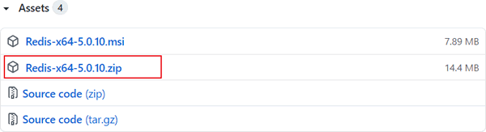
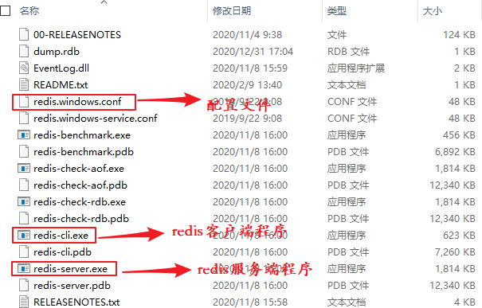
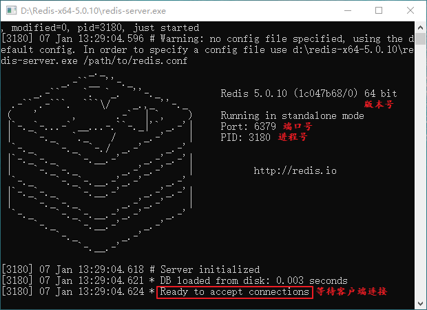
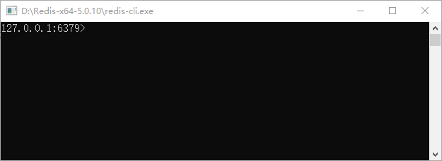
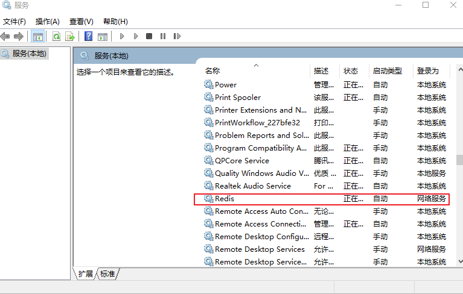
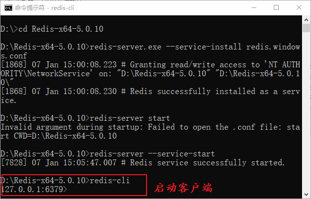
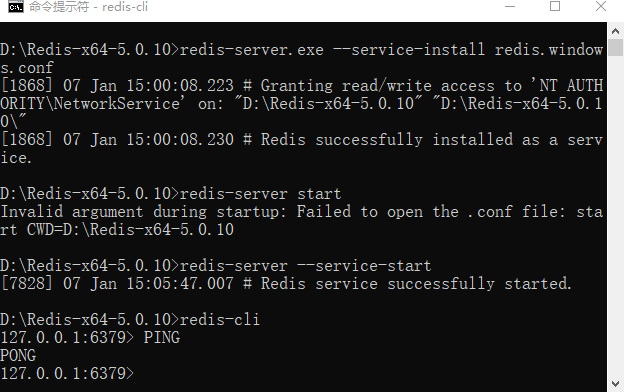
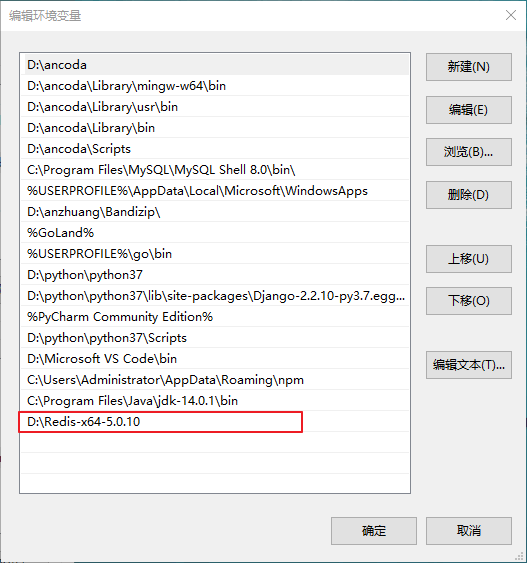

Redis下载和安装（Windows系统）
为便于大多数读者学习本套教程，教程中采用 Windows 系统对 Redis 数据库进行讲解。虽然 Redis 官方网站没有提供 Windows 版的安装包，但可以通过 GitHub 来下载 Windows 版 Redis 安装包，下载地址：点击前往。
打开上述的下载链接，Redis 支持 32 位和 64 位的 Window 系统，大家根据个人情况自行下载，如图 1 所示：
下载完成后，打开相应的文件夹，您会看到如下图所示的文件目录：

图5：命令启动 Redis 服务
注意：此时 Redis 已经被添加到 Windows 服务中，因此不会再显示 Redis 服务端的相应的信息，如下图所示：
通过上面的操作，我们完成了 Redis 的安装。当然，您也可以将 Redis 加入到环境变量中，如下所示：
注意：Windows 安装包是某位民间“大神”根据 Redis 源码改造的，并非 Redis 官方网站提供。
在 Windows 系统下安装 Redis 要比 Linux 系统安装稍微复杂一些，本节详细介绍如何在 Windows 系统上如何安装 Redis。打开上述的下载链接，Redis 支持 32 位和 64 位的 Window 系统，大家根据个人情况自行下载，如图 1 所示：

图1：Redis 安装
图1：Redis 安装
下载完成后，打开相应的文件夹，您会看到如下图所示的文件目录：

图2：Window 安装 Redis
图2：Window 安装 Redis
创建Redis临时服务
1) 启动服务端程序
如上图所示，双击 Redis 服务端启动程序 redis-server.exe，您会看到以下界面：

图3：启动 Redis 服务端程序
上图中显示一些 Redis 的相关信息，比如 Redis 的版本号以及默认端口号(6379)。注意，为了实现后续操作，请您保持服务端开启状态，否则客户端无法正常工作。
图3：启动 Redis 服务端程序
2) 启动客户端程序
启动服务端后，双击客户端启动程序 redis-cli.exe，得到如下界面：

图4：Redis客户端启动
得到如上界面，说明 Redis 本地客户端与服务端连接成功。
图4：Redis客户端启动
命令创建Redis服务
上述方式虽然简单快捷，但是显然不是程序员的操作，下面介绍，通过命令启动 Redis 服务端，并将 Redis 服务添加到 Windows 资源管理器，实现开机后自动启动。1) 注册Redis服务
通过 CMD 命令行工具进入 Redis 安装目录，将 Redis 服务注册到 Windows 服务中，执行以下命令：redis-server.exe --service-install redis.windows.conf --loglevel verbose执行完后，得到以下输出，说明注册成功。
[1868] 07 Jan 15:00:08.223 # Granting read/write access to 'NT AUTHORITY\NetworkService' on: "D:\Redis-x64-5.0.10" "D:\Redis-x64-5.0.10\" [1868] 07 Jan 15:00:08.230 # Redis successfully installed as a service.
2) 启动Redis服务
执行以下命令启动 Redis 服务，命令如下：redis-server --service-start如下图所示：
图5：命令启动 Redis 服务
注意：此时 Redis 已经被添加到 Windows 服务中，因此不会再显示 Redis 服务端的相应的信息，如下图所示：

图6：Windows 服务管理界面
图6：Windows 服务管理界面
3) 启动Redis客户端
在 CMD 命令行输出 redis-cli 命令启动客户端，如下所示：

图7：启动 Redis 客户端
图7：启动 Redis 客户端
4) 检查是否连接成功
测试客户端和服务端是否成功连接。输出PING命令，若返回PONG则证明成功连接。如下所示：

图8：测试客户端是否连接
图8：测试客户端是否连接
通过上面的操作，我们完成了 Redis 的安装。当然，您也可以将 Redis 加入到环境变量中，如下所示：

图9：环境变量配置
图9：环境变量配置
注意：根据自己的安装路径添加环境变量。
总结
下面对安装过程中涉及到的命令进行总结，主要包括以下命令：安装服务：redis-server --service-install 卸载服务：redis-server --service-uninstall 开启服务：redis-server --service-start 停止服务：redis-server --service-stop 服务端启动时重命名：redis-server --service-start --service-name Redis1
关注公众号「站长严长生」，在手机上阅读所有教程，随时随地都能学习。内含一款搜索神器，免费下载全网书籍和视频。

微信扫码关注公众号